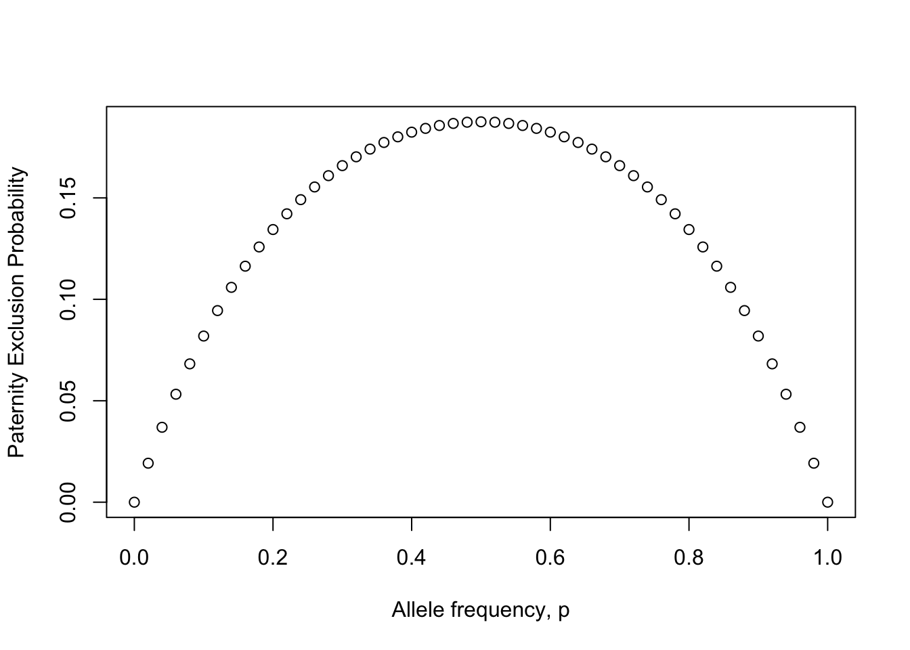
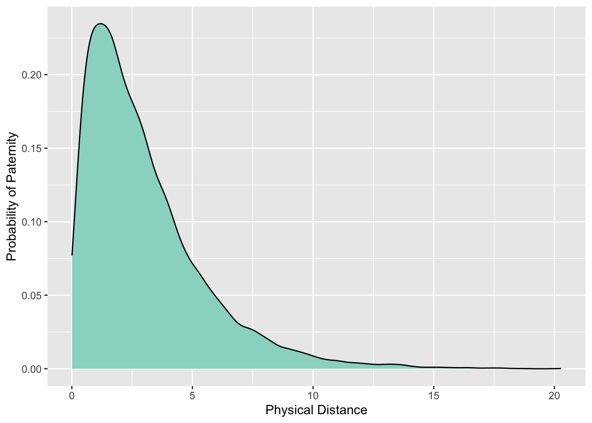
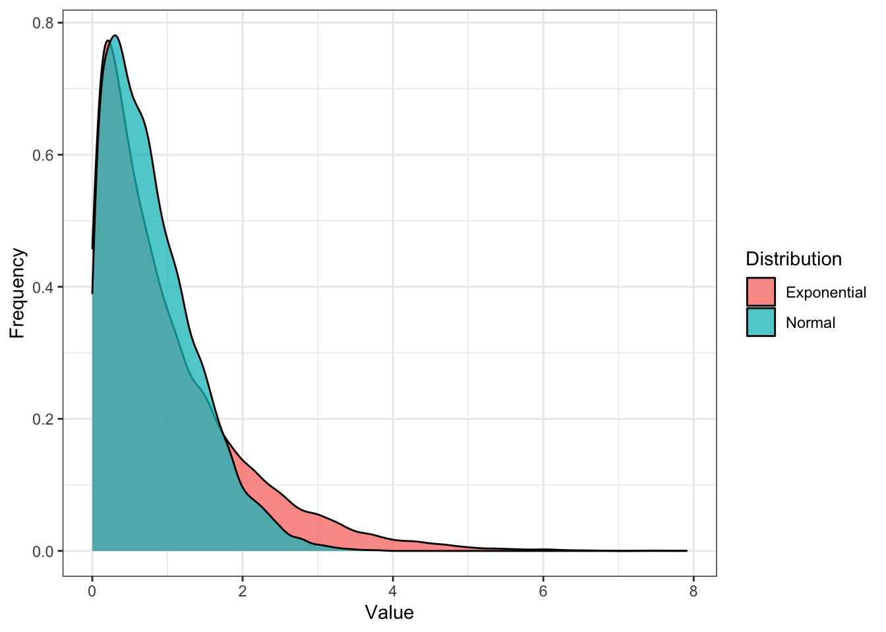

15 Parentage Analyses

The analysis of parental and offspring data
- Parentage-type analyses.
- Analyses based upon multiple paternity
Parentage analyses are used in a broad range of studies:
- Identical vs fraternal twins
- Agricultural crop line differentiation
- Differentiate between livestock/dog/cat breeds
- Pathogenic strain identification (e.g., Hep-C strains a-e)
- Assigning parentage to individuals
- Assigning individuals to populations
- Identifying the source of unknown tissues (e.g., gettin’ perps)
knitr::include_graphics("media/paternity.png")
A statistical approach for identifying the parent(s) of a particular individual. This requires:
- A set of genetic markers that are bi-parentally inherited
- Variation in these markers
- Some assumptions about the prior probability of the union of parents.
15.1 Paternity vs. Maternity
For single parent parentage analysis, it is either paternity or maternity that is being established. Here we assume that the other parent is definitely the biological parent of the individual (e.g., \(P(prior)=1\)). This can be because:
- The offspring was collected from the identified parent
- There is other evidence that points to the identified parent being the biological one.
The goal then is to determine who the unidentified parent is with some level of statistical probability.
Terms Used in Parentage
The following terms are commonly used in parentage analyses:
Extra-Pair Paternity - Fertilization resulting from copulation outside a recognized pair bond.
Multiple Paternity - Offspring produced from mating events with different sets of individuals.
Paternity/Maternity Exclusion - Excluding an individual based upon an in-congruence in observed genetic data.
15.2 Probability of Exclusion
| Mother | Offspring | Excluded Dads | Probability |
|---|---|---|---|
| \(A_1A_1\;(p^2_1)\) | \(A_1A_1\;(p_1)\) | \(A_2A_2\;(p_2^2)\) | \(p_1^3p_2^2\) |
| \(A_1A_1\;(p^2_1)\) | \(A_1A_2\;(p_2)\) | \(A_1A_1\;(p_1^2)\) | \(p_1^4p_2\) |
| \(A_1A_1\;(p^2_1)\) | \(A_2A_2\;(0)\) | - | - |
| \(A_1A_2\;(2p_1p_2)\) | \(A_1A_1\;(\frac{p_1}{2})\) | \(A_2A_2\;(p_2^2)\) | \(p_1^2p_2^3\) |
| \(A_1A_2\;(2p_1p_2)\) | \(A_1A_2\;(\frac{1}{2})\) | - | - |
| \(A_1A_2\;(2p_1p_2)\) | \(A_2A_2\;(\frac{p_2}{2})\) | \(A_1A_1\;(p_1^2)\) | \(p_1^3p_2^2\) |
| \(A_2A_2\;(p^2_2)\) | \(A_1A_1\;(0)\) | - | - |
| \(A_2A_2\;(p^2_2)\) | \(A_1A_2\;(p_1)\) | \(A_2A_2\;(p_2^2)\) | \(p_1p_2^4\) |
| \(A_2A_2\;(p^2_2)\) | \(A_2A_2\;(p_2)\) | \(A_1A_1\;(p_1^2)\) | \(p_1^2p_2^3\) |
Probability of Exclusion
[ P_{exc} = p_13p_22 + p_1^4p_2 +p_12p_23 +p_13p_22 +p_1p_2^4 +p_12p_23 \ ]
which when simplified down a bit becomes
[ P_{exc} = p_1p_2(1-p_1p_2) ]
Single Locus Paternity Exclusion
p <- seq(0,1,by=0.02)
q <- 1-p
Pexcl <- p*q*(1-p*q)
plot(Pexcl ~ p, xlab="Allele frequency, p", ylab="Paternity Exclusion Probability")
Multilocus Exclusion
Exclusion probabilities are multiplicative properties.
[ P_{excl} = 1 - {i=1}^(1-P{excl,;i}) ]
Example
p <- rep( 0.5*0.5*(1-0.5*0.5), 5 )
p[1] 0.1875 0.1875 0.1875 0.1875 0.1875ptot <- 1
for( i in 1:length(p))
ptot <- ptot * (1-p[i])
1-ptot[1] 0.6459074| Mother | Offspring | Excluded Father \(A_xA_y\) | Probability of Exclusion |
|---|---|---|---|
| \(A_iA_i\;(p_i^2)\) | \(A_iA_i\;(p_i)\) | \(x,y\ne i\;\; (1-p_i)^2\) | \(p_i^3(1-p_i)^2\) |
| \(A_iA_i\;(p_i^2)\) | \(A_iA_j\;(p_j)\) | \(x,y\ne j\;\; (1-p_j)^2\) | \(p_i^2p_j(1-p_i)^2\) |
| \(A_iA_j\;(2p_ip_j)\) | \(A_iA_i\;(\frac{p_i}{2})\) | \(x,y \ne i\;\; (1-p_i)^2\) | \(p_i^2p_j(1-p_i)^2\) |
| \(A_iA_j\;(2p_ip_j)\) | \(A_iA_j\;(\frac{p_i+p_j}{2})\) | \(x,y \ne i,j\;\; (1-p_i-p_j)^2\) | \(p_ip_j(p_i+p_j)(1-p_i-p_j)^2\) |
| \(A_iA_j\;(2p_ip_j)\) | \(A_iA_k\;(\frac{p_k}{2})\) | \(x,y \ne k\;\; (1-p_k)^2\) | \(p_ip_jp_k(1-p_k)^2\) |
| \(A_iA_j\;(2p_ip_j)\) | \(A_jA_k\;(\frac{p_k}{2})\) | \(x,y \ne k\;\; (1-p_k)^2\) | \(p_ip_jp_k(1-p_k)^2\) |
| \(A_iA_j\;(2p_ip_j)\) | \(A_jA_j\;(\frac{p_j}{2})\) | \(x,y \ne j\;\; (1-p_j)^2\) | \(p_ip_j^2(1-p_j)^2\) |
15.3 Paternity Exclusion
Likelihood Ratios
A likelihood ratio is given by:
[ LR = ]
where the \(H_X\) values are the hypotheses probabilities.
Nomenclature For Parentage
| Individual | Identifier | Genotype |
|---|---|---|
| Female Parent | \(FP_i\) | \(\alpha_i\) |
| Putative Male Parent | \(MP_j\) | \(\beta_j\) |
| Offspring | \(O_k\) | \(\gamma_k\) |
\(\;\)
Paternal Probability The posterior odds of paternity versus non-paternity given the totality of genetic information.
Likelihood Ratios | Genetic Equivalences
The likelihood of one hypothesis, \(H_1\) relative to another \(H_2\) is:
[ L(H_1,H_2|D) = ]
where
[ P(D|H) = T(| , )P()P() ]
Assuming \(H_1:\) states that \(\beta\) is the real father of \(\gamma\) on \(\alpha\) and \(H_2:\) states that he is just a random individual in the population is:
[ L(H_1,H_2|,,) =
]
which can be simplified to:
[ _j = \ = \ = ]
where \(T(X|Y)\) is the Mendelian transition probability of offspring \(X\) given parent \(Y\).
Assumptions in Model of Paternity Likelihood
The basic paternity exclusion model assumes:
- Completely random mating (can be modified by changin priors)
- Independent assortment of alleles
Likelihood Example
Consider the maternal individual whose genotypes are: [ FP = {AA,;Bb,;CC,;Dd} ]
Whose \(i^{th}\) offspring has the genotypes:
[ O_i = {AA,;BB,;Cc,;dd} ]
Likelihood Example | \(T(O|FP)\)
The transition probability, \(T(O|FP)\), is then:
| Individual | Locus1 | Locus2 | Locus3 | Locus4 |
|---|---|---|---|---|
| \(FP\) | \(AA\) | \(Bb\) | \(CC\) | \(Dd\) |
| \(O_i\) | \(AA\) | \(BB\) | \(Cc\) | \(dd\) |
\(T(O|FP) = 1*0.5*1*0.5 = 0.25\)
Likelihood Example | Putative Male Parents
| Individual | Locus1 | Locus2 | Locus3 | Locus4 |
|---|---|---|---|---|
| \(MP_1\) | \(Aa\) | \(BB\) | \(cc\) | \(Dd\) |
| \(MP_2\) | \(AA\) | \(BB\) | \(Cc\) | \(dd\) |
\(\;\)
Which one of the potential fathers is the most likely parent?
Likelihood Example | First Putative Father
| Individual | Locus1 | Locus2 | Locus3 | Locus4 |
|---|---|---|---|---|
| \(FP\) | \(AA\) | \(Bb\) | \(CC\) | \(Dd\) |
| \(MP_1\) | \(Aa\) | \(BB\) | \(cc\) | \(Dd\) |
| \(O_i\) | \(AA\) | \(BB\) | \(Cc\) | \(dd\) |
| \(T(O|FP,MP)\) | 0.5 | 0.5 | 1.0 | 0.25 |
[ T(O_1|FP,MP_1) = 0.5 * 0.5 * 1.0 * 0.25 = 0.0625 ]
And
[ _1 = = = 0.25 ]
Likelihood Example | Second Putative Father
| Individual | Locus1 | Locus2 | Locus3 | Locus4 |
|---|---|---|---|---|
| \(FP\) | \(AA\) | \(Bb\) | \(CC\) | \(Dd\) |
| \(MP_2\) | \(AA\) | \(BB\) | \(Cc\) | \(dd\) |
| \(O_i\) | \(AA\) | \(BB\) | \(Cc\) | \(dd\) |
| \(T(O|FP,MP)\) | 1.0 | 0.5 | 0.5 | 0.5 |
[ T(O_1|FP,MP_2) = 1.0 * 0.5 * 0.5 * 0.5 = 0.125 ]
And
[ _2 = = = 0.5 ]
Likelihood Example | Interpretation of Results {.build}
Most likely parent is \(MP_2\) because \(\lambda_2 = 0.5 > \lambda_1 = 0.25\).
\(\;\)
Does this mean that \(MP_2\) is the real parent?
Likelihood Example | In Class Exercise - Whose the daddies?
| Individual | Locus 1 | Locus 2 | Locus 3 |
|---|---|---|---|
| Mother | \(A_1A_1\) | \(B_1B_3\) | \(C_1C_1\) |
| Offspring 1 | \(A_1A_2\) | \(B_1B_3\) | \(C_1C_2\) |
| Offspring 2 | \(A_1A_1\) | \(B_3B_3\) | \(C_1C_1\) |
| Offspring 3 | \(A_1A_1\) | \(B_1B_1\) | \(C_1C_1\) |
| Dad 1 | \(A_1A_2\) | \(B_2B_3\) | \(C_1C_1\) |
| Dad 2 | \(A_2A_2\) | \(B_1B_1\) | \(C_1C_2\) |
| Dad 3 | \(A_1A_1\) | \(B_2B_3\) | \(C_1C_2\) |
| Dad 4 | \(A_1A_1\) | \(B_1B_1\) | \(C_2C_2\) |
library(gstudio)
loci <- c("Locus-A","Locus-B","Locus-C","Locus-D")
freqs <- data.frame(Locus = rep(loci, each = 4),
Allele = rep(LETTERS[1:4], times = 4),
Frequency = 0.25)
freqs Locus Allele Frequency
1 Locus-A A 0.25
2 Locus-A B 0.25
3 Locus-A C 0.25
4 Locus-A D 0.25
5 Locus-B A 0.25
6 Locus-B B 0.25
7 Locus-B C 0.25
8 Locus-B D 0.25
9 Locus-C A 0.25
10 Locus-C B 0.25
11 Locus-C C 0.25
12 Locus-C D 0.25
13 Locus-D A 0.25
14 Locus-D B 0.25
15 Locus-D C 0.25
16 Locus-D D 0.25adults <- make_population( freqs, N=100 )
adults$OffID <- 0
adults <- adults[ , c(1,6,2:5)]
adults[1:5,] ID OffID Locus-A Locus-B Locus-C Locus-D
1 1 0 B:D B:D B:D C:D
2 2 0 D:D B:C B:B A:C
3 3 0 A:C B:D A:C A:A
4 4 0 A:D B:D D:D A:B
5 5 0 D:D B:B B:B A:Coffs <- data.frame()
mom <- adults[1,]
for( i in 1:20){
dad_id <- runif( 1, min=2, max=100)
dad <- adults[dad_id,]
off <- mate( mom, dad, N=1 )
offs <- rbind( offs, off )
}
offs$OffID <- 1:20
offs[1:5,] ID OffID Locus-A Locus-B Locus-C Locus-D
1 1 1 D:D B:D C:D B:C
2 1 2 B:B D:D B:C B:D
3 1 3 A:D B:C B:D D:D
4 1 4 B:B B:C B:B D:D
5 1 5 D:D B:D B:D B:Cdata <- rbind( adults, offs )
data <- data[ order(data$ID,data$OffID),]
rownames(data) <- 1:nrow(data)
data[1:10,] ID OffID Locus-A Locus-B Locus-C Locus-D
1 1 0 B:D B:D B:D C:D
2 1 1 D:D B:D C:D B:C
3 1 2 B:B D:D B:C B:D
4 1 3 A:D B:C B:D D:D
5 1 4 B:B B:C B:B D:D
6 1 5 D:D B:D B:D B:C
7 1 6 B:D C:D A:B C:D
8 1 7 D:D B:D B:D C:D
9 1 8 D:D B:B B:D C:C
10 1 9 A:B B:C B:D C:Df <- frequencies( data[ data$OffID==0,] )
excl <- exclusion_probability( f )
excl Locus Pexcl PexclMax Fraction
1 Locus-A 0.5038453 0.5039062 0.9998791
2 Locus-B 0.5038453 0.5039062 0.9998791
3 Locus-C 0.5037248 0.5039062 0.9996400
4 Locus-D 0.5038453 0.5039062 0.9998791p <- excl$Pexcl
excl_multilocus <- 1 - prod( 1-p )
excl_multilocus[1] 0.9393859family <- data[ data$ID==1, ]
minus_mom( family ) ID OffID Locus-A Locus-B Locus-C Locus-D
2 1 1 D B:D C B
3 1 2 B D C B
4 1 3 A C B:D D
5 1 4 B C B D
6 1 5 D B:D B:D B
7 1 6 B:D C A C:D
8 1 7 D B:D B:D C:D
9 1 8 D B B:D C
10 1 9 A C B:D C:D
11 1 10 A C C A
12 1 11 B:D B B B
13 1 12 B:D D B:D B
14 1 13 B:D B:D D C:D
15 1 14 B C A B
16 1 15 B:D B:D D D
17 1 16 D D D A
18 1 17 B:D D C C
19 1 18 A B:D C A
20 1 19 B:D D C D
21 1 20 C B B Cdads <- adults[2:100,]
mom <- adults[1,]
off <- offs[1,]
for( i in 1:nrow(dads)){
dad <- dads[i,]
T <- transition_probability(off,mom,dad)
if( T > 0 )
cat("Father",i,"may be the real father (T =",T,")\n")
}Father 24 may be the real father (T = 0.00390625 )
Father 30 may be the real father (T = 0.00390625 )
Father 44 may be the real father (T = 0.0078125 )
Father 77 may be the real father (T = 0.015625 )
Father 82 may be the real father (T = 0.0078125 )
Father 86 may be the real father (T = 0.0078125 )
Father 95 may be the real father (T = 0.00390625 )15.4 Fractional Paternity
In cases where we have more than one putative father, we may want to get an idea of the relative strength of our inferences by comparing the likelihood ratios for all dads.
- We may use arbitrary cut-offs, or
- We may use all non-excluded dads, but weighted by their fractional contributions
Conditional Probability
Problem: We have several putative fathers (\(MP_i, MP_j, MP_k, ... , MP_m\)) have been found to have non-zero likelihoods of paternity.
\(\;\)
Question: What is the relative likelihood of paternity given these putative fathers?
Conditional Probability
Conditional probability determines the likelihood of an event (paternal likelihood) given that some other event has already happened (not excluded as a potential father).
[ P(MP=j^*|FP=i,O=k) = ]
If we can assume that \(P(MP=j|FP=i) = c\) (e.g., the frequencies of the female and male parents are constant with respect to the individual offspring being considered) then,
[ P(MP=j^*|FP=i,O=k) = ]
Fractional Paternity
Some things to consider when using fractional analyses for paternity.
- Not usually used in human studies.
- Can be considered a prior probability of paternity.
- Can include ecological, spatial, evolutionary components such as differential attractiveness, pollen fertility, output, etc.
- Possible tautology
Every potential father is assigned paternity, the fraction of \(X_{ik}\) on a particular \(MP_j\) is proportional to the likelihood ratio.
MomID OffID DadID Fij
Min. :1 Min. : 1.0 Min. : 2.00 Min. :0.01639
1st Qu.:1 1st Qu.: 7.0 1st Qu.:31.00 1st Qu.:0.05882
Median :1 Median :10.0 Median :62.00 Median :0.08696
Mean :1 Mean :10.4 Mean :55.79 Mean :0.12346
3rd Qu.:1 3rd Qu.:15.0 3rd Qu.:81.00 3rd Qu.:0.16000
Max. :1 Max. :20.0 Max. :99.00 Max. :0.80000 frac[1:10,] MomID OffID DadID Fij
1 1 1 78 0.30769231
2 1 1 45 0.15384615
3 1 1 83 0.15384615
4 1 1 87 0.15384615
5 1 1 25 0.07692308
6 1 1 31 0.07692308
7 1 1 96 0.07692308
8 1 2 11 0.33333333
9 1 2 93 0.33333333
10 1 2 31 0.08333333t <- table(frac$OffID)
t
1 2 3 4 5 6 7 8 9 10 11 12 13 14 15 16 17 18 19 20
7 6 5 3 10 7 22 9 9 5 4 11 18 4 10 5 5 12 8 2 N_pexcl <- nrow(dads)*(1-excl_multilocus)
fit <- t.test(as.numeric(t),mu = N_pexcl)
fit
One Sample t-test
data: as.numeric(t)
t = 1.896, df = 19, p-value = 0.07327
alternative hypothesis: true mean is not equal to 6.000798
95 percent confidence interval:
5.782701 10.417299
sample estimates:
mean of x
8.1 Maternity Analysis
Putative father identified by mother unknown.
[ _i = \ = ]
where \(P(\gamma)\) is the frequency of the offspring genotype in the population. All other things are the same.
Cryptic Gene Flow
Consider the case where:
- You have identified a set of offspring collected from mothers.
- Identified a set of fathers that are probabilistically sires of the offspring.
15.5 Dispersal Kernels
Estimating the Disperal Distribution
Once a collection of paternity estimates have been determined, you can use them to estimate a dispersal kernel, describing the probability of paternity as a function of distance from the maternal individual.
dist <- data.frame( Distance=rchisq(10000,df = 3))
ggplot(dist, aes(x=Distance)) + geom_density(fill="#99d8c9") + xlab("Physical Distance") + ylab("Probability of Paternity") 
Dispersal Kernels | Distributions
The form of the distribution is critical for estimation. It determines:
- The shape of the distribution
- The variance of the distribution
- Quantitative estimates and hypotheses you get from the data
Example Kernel Distribution Families
Normal Family
[ p(a|x,y) = exp]
where \(r = \sqrt{ x^2 + y^2}\) and \(a = \sigma \sqrt{2}\).
\(\;\)
This produces a thin tailed distribution.
Example Kernel Distribution Families
Exponential Family
[ p(a,b|x,y) = exp]
where \(\Gamma(a,b)\) is the gamma function and \(b\) is a ‘shape’ parameter.
- When \(b=1\) This is the exponential distribution.
- When \(b=2\) this is the normal function.
- When \(b<1\) this is a fat-tailed distribution.
Example Kernel Distribution Families
Other distributions you may run across include:
- The Geometric distribution,
- The Weibull family of distributions,
- The 2Dt family of distributions.
r1 <- abs(rnorm(10000))
r2 <- rexp(10000)
df <- data.frame( Distribution=c(rep(c("Normal","Exponential"),each=10000)), Value=c(r1,r2))
library(ggplot2)
ggplot(df,aes(x=Value,fill=Distribution)) + geom_density(alpha=0.75) + theme_bw() + ylab("Frequency")
Concerns with kernel estimation
The following are some assumptions that are inherent in the use of dispersal kernels for estimating connectivity.
- All functions are continuous,
- All functions assume isotropy in dispersal,
- All functions explicitly assume homogeneity of the dispersal matrix.
Skills
In this lecture we covered some rather simple parent/offspring relationships and how we can analyze them. Specifically, you should be comfortable with:
- Understanding the qualities of loci that make for more powerful parentage analyses.
- Be able to estimate single and multilocus exclusion probabilities and understand what they mean.
- Estimate likelihood ratios for paternity given Mother, Offspring, and Putative Male Parent.
- Use fractional paternity and understand conditional probability and how it applies to parentage.
- Understand dispersal kernel estimation.